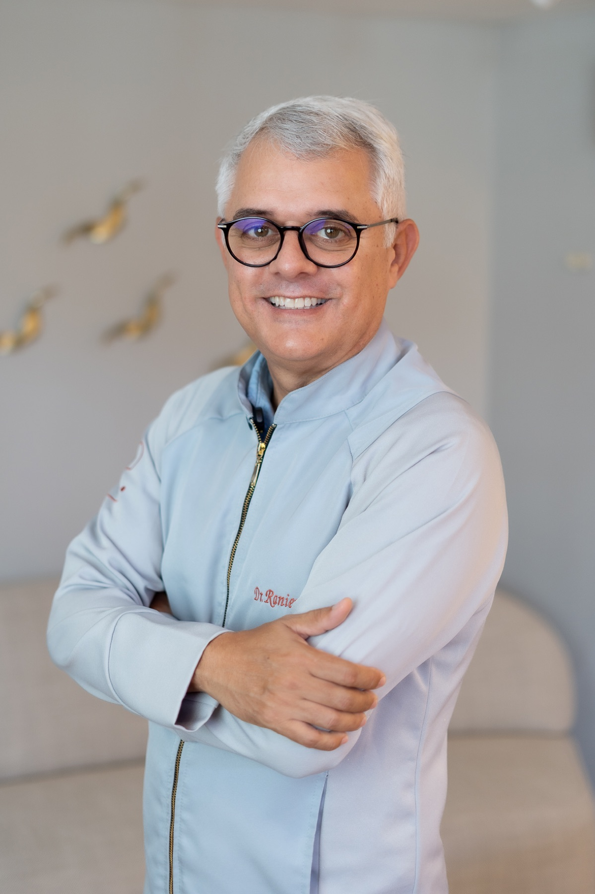
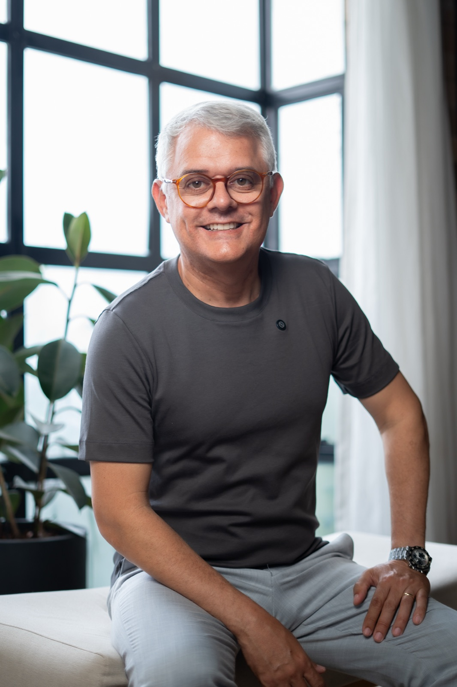

Ortodontia avançada
Casos que exigem diagnóstico profundo e biomecânica de precisão. Mordidas abertas, classes II e III, assimetrias faciais.
Ortopedia facial para crianças e adolescentes · Retratamento · Mordida aberta esquelética · DTM · Preparo para cirurgia ortognática · Integração com implante, prótese e estética.
Diagnóstico tridimensional antes de qualquer plano de tratamento.

Você fez tratamento ortodôntico, mas o problema voltou. Ou recebeu opiniões conflitantes. Talvez conviva há anos com um problema sem diagnóstico definitivo.
Casos assim chegam ao meu consultório toda semana. O que eles têm em comum? Precisavam de um diagnóstico preciso que nunca foi feito.
O diagnóstico estruturado muda tudo. Ele revela o que o raio-X não mostra, define o que funciona para o seu caso e elimina o improviso.
Conversa detalhada sobre queixa, histórico e expectativas. Tempo para compreender o caso antes de qualquer plano.
Tomografia, análise cefalométrica 3D, avaliação esquelética facial e da articulação temporomandibular.
Planejamento digital com simulação de resultado. Você entende o que será feito, por que e em quanto tempo.
Casos tratados com diagnóstico tridimensional, planejamento digital e biomecânica aplicada. Clique em cada caso para ver a evolução completa.
Casos que exigem diagnóstico profundo e biomecânica de precisão. Mordidas abertas, classes II e III, assimetrias faciais.
Quando o primeiro tratamento não resolveu. Diagnóstico do que falhou, planejamento que não repete os mesmos erros.
Ortopedia facial por meio do redirecionamento do crescimento. Intervenção precoce que evita cirurgias e tratamentos mais invasivos no futuro.
Descompensação ortodôntica precisa para que a correção cirúrgica funcione com previsibilidade.
Movimentações impossíveis com mecânica convencional. Intrusão verdadeira e controle vertical com pesquisa científica própria.
Planejamento coordenado com implante, prótese e estética. O ortodontista prepara o terreno para as demais especialidades.
Minha filha é paciente da clínica Raniere Sousa Ortodontia por dois anos e posso dizer com certeza que é uma experiência muito positiva. O atendimento é de excelência, desde a recepção até o acolhimento do Dr. Raniere. Ele é muito atencioso e prestativo, sempre disposto a tirar minhas dúvidas e me ajudar no que for preciso. O Dr. Raniere é um profissional altamente qualificado e com muita experiência. Ele é muito dedicado aos seus pacientes e sempre busca o melhor resultado possível.
Excelente. Tratamento personalizado, clínica familiar — coisas que não se acha no mercado. Eu saio do Rio de Janeiro para seguir meu tratamento. Tem sido excepcional, tenho visto a responsabilidade e o profissionalismo, e não poderia deixar de falar sobre o cuidado, atenção e dedicação. Vejo o meu tratamento como uma transformação de vida — mudou a minha alta estima. Obrigado Dr. Raniere. O senhor tem um sacerdócio, um chamado, e não só uma profissão.
Um profissional no mais altíssimo nível, indico sem medo. A sua equipe é muito organizada e pontual — é muito gratificante voltar a sorrir sem medo. A clínica é impecável em todos os aspectos, os profissionais nos passam segurança e confiança.
Minha experiência com Raniere e o pessoal da clínica Vicente de Paula foi a melhor possível. Eles são uma família e minha sensação é sempre essa, de estar em família. Estão sempre buscando atender da melhor maneira. Só gratidão.
Posso classificar o meu sorriso e saúde bucal como antes e depois do tratamento que fiz nessa clínica com os Drs. Raniere, Claudine, Rodrigo e Ricardo. Além de competentes e atenciosos, me deixaram sempre muito segura sobre os procedimentos e seus resultados. Confio e indico essa clínica de olhos fechados!
Melhor escolha que fiz. Profissional extremamente competente, sempre buscando excelência, prezando pelos detalhes. Uma pessoa de alto astral e positiva. Além da clínica ser top, a sua localização é melhor ainda.
Raniere é um profissional em que o cliente já percebe a qualificação no contato inicial e confirma a excelência nos procedimentos seguintes. Isso se deve à pessoa que ele é, somatizando com a busca constante pelo aperfeiçoamento.
Excelente profissional. Demonstra um conhecimento ímpar, ótimo atendimento, presteza e correção no que faz, esclarecendo todas as dúvidas.

Cirurgião-dentista formado pela UFRN em 2000. Especialista e mestre em Ortodontia. Pós-graduação em DTM. Doutorado em andamento em Inovação em Saúde pela UFRN, com pesquisa em miniplacas de ancoragem esquelética.
Revisor de artigos científicos. Criador da Mentoria Remodelar — ortodontia integrada para profissionais.
Mais de duas décadas de prática clínica focada em casos que exigem raciocínio e diagnóstico.
Visualização tridimensional de estruturas que o raio-X não mostra. ATMs, cortical óssea, vias aéreas, posição de raízes.
Doutorado em andamento investiga protocolos de instalação. Prática clínica alimentada por pesquisa primária.
Simulação de movimentações antes de iniciar. O paciente vê a projeção do resultado; o cirurgião recebe o plano preciso.
Cada decisão mecânica derivada do diagnóstico individual. Arcos segmentados, intrusão controlada, vetores calculados.
Retratamento, mordida aberta esquelética, preparo ortognático. Integração de ortodontia, implante e prótese estética.
Sem fila de produção. Cada caso recebe o tempo que precisa — do diagnóstico à retenção de longo prazo.
A consulta do Dr. Raniere é realizada em três momentos, para que o diagnóstico e o planejamento do tratamento sejam feitos com bastante precisão:
Momento 1 — Anamnese detalhada, avaliação clínica inicial e solicitação dos exames necessários.
Momento 2 — Estudo completo do caso pelo Dr. Raniere (realizado sem a presença do paciente).
Momento 3 — Consulta de retorno para apresentação do diagnóstico, planejamento do tratamento, orçamento e demonstração de casos semelhantes já tratados.
Esse formato permite uma avaliação mais criteriosa e personalizada para cada paciente.
Casos que parecem simples podem esconder componentes esqueléticos, articulares ou de estabilidade que só aparecem com diagnóstico aprofundado. A maioria dos casos complexos vem camuflada de simplicidade — e isso faz muitos profissionais minimizarem a importância do diagnóstico 3D.
Retratamento é uma das especialidades do consultório. O primeiro passo é entender por que o tratamento anterior falhou, e construir um plano que ofereça equilíbrio e estabilidade em longo prazo.
Pode ter — ou pode não ter. A dor na face tem causas variadas: oclusão, posição condilar, hábitos parafuncionais, tensão muscular, componentes articulares. Só uma avaliação clínica criteriosa, com os exames corretos, permite entender a origem real do seu caso. Por isso não damos diagnóstico à distância. O passo correto é agendar uma consulta para investigar.
Sim, trabalhamos com alinhadores. A indicação, porém, é precisa: o alinhador não resolve todos os casos. Em situações específicas ele é a melhor escolha; em outras, a biomecânica convencional entrega resultado mais previsível. A decisão é feita caso a caso, depois do diagnóstico estruturado.
Depende da complexidade. Casos simples levam cerca de 12 meses; casos complexos podem chegar a 22 meses. Com base na experiência clínica, é possível estimar a duração com precisão desde a primeira consulta.
Agende sua avaliação e entenda o que realmente está acontecendo com o seu caso.
FALAR COM A EQUIPE PELO WHATSAPPClínica Vicente de Paula
Rua Des. Antônio Soares, 1273, Tirol, Natal/RN